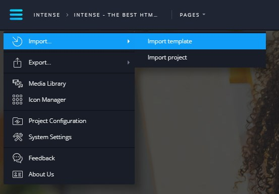
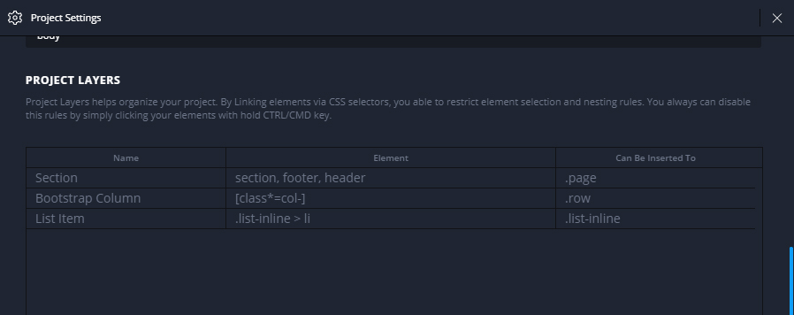

Import Template
(Step by Step)
This section provides a step-by-step guidance on importing a third-party HTML template to Novi Builder and its subsequent set up.
The template import process consists of the following stages:
- Builder setup;
- Template import preparation;
- Preparing scripts for working with builder;
- Preparing styles for working with builder;
- Preparing HTML markup for working with builder;
- Project setup;
- System setup;
- Project preparation for use.
Builder Setup
Before you start working with builder, you should perform the initial setup. To do this, navigate to the builder tab, then go to the config directory.
Open config.json file in any text editor.
To continue, configure the following settings:
- jets - "true"
- demoMode - "false"
Template Import Preparation
Before importing the template, you should create an appropriate .zip file for importing it into builder.
In our case, we’ve got a template with the following structure:
-
site - template directory;
- bat- directory that contains all the needed php files;
- сss - directory that contains template css styles;
- fonts - iconic fonts, integrated to the template;
- images - directory that contains template imagery;
- js - template js code;
- about.html - template HTML pages;
- blog.html
- blog-single-post.html
- contacts.html
- index.html
- news.html
- portfolio_grid.html
- portfolio_justified.html
- portfolio_list.html
- portfolio_masonry.html
- privacy.html
To import the template, prepare .zip archive file that contains all the contains of the ‘site’ directory.
Attention! There should be no additional parent directories in the .zip file.
Wrong:
- site.zip
- site
- bat
- ...
- privacy.html
- site
Correct:
- site.zip
- bat
- ...
- privacy.html
So, the archive is built and builder is configured. Open the builder on your server, go to the main menu, and choose "Import", "Template Import".
{kind=link}
Choose the .zip file and upload it. Then, you’ll be prompted to re-load the system. Accept the offer.
That’s it! Your project is successfully imported to the builder.
Preparing Scripts for Working with Builder
Novi Builder is compatible with all js scripts, but some of them may require additional setup in Novi environment.
To set them up, use the xMode attribute, which is added to the ‘window’ object after the document loading.
The working logic or style display of your scripts may differ if the check is active:
if ( window.xMode ) {
// Your JS code executed in Design Mode and Edit Mode of Novi Builder.
} else {
// Your JS code that will not work in Design Mode and Edit Mode of Novi Builder.
}
Please, pay attention that the xMode attribute of window object will be available after the document is loaded, in this concern, the above-mentioned code listing will look as follows:
$document.ready(function () {
var isNoviBuilder = window.xMode;
if ( isNoviBuilder ) }
// Your JS code executed in Design Mode and Edit Mode of Novi Builder.
} else {
// Your JS code that will not work in Design Mode and Edit Mode of Novi Builder.
}
});
Cases, when the additional setup is necessary:
- Your script redefines the native <body> scroll. In this case, the elements won’t be draggable in the builder, and the scroll won’t work. As an example serve different smooth scroll plugins.
- Your script allows moving elements that contain text with connection events, such as mousedown, mousemove, mouseup. In this case, text editing is impossible. For example, slide switching with the help of mouse drag.
- Your script creates an unsynchronized copy of the element. Under the unsynchronized copy we mean an element, which does not change the initial element during editing and vice versa. In this case, the correct saving of the template is not guaranteed. For example, duplicating the navigation to implement a sticky navigation.
- Your script animates an element using the means of transform group. In this case, the element selection during and before the animation will be located in the resulting animation point. For instance, wow animation.
- Your script adds submit, click and other ajax logics while being processed. When editing this element (e.g., when editing button text) extra queries are sent. For instance, form submission without page reload (ajax).
Consider an example based on our template.
Our template contains the following scripts:
- RD Navbar
- Swiper Slider
- Materialize Parallax
- RD Google Map
- RD Mailform
- Isotope Filter
RD Navbar Setup
First, let’s define the xMode attribute for using it inside the builder:
$document.ready(function () {
var isNoviBuilder = window.xMode;
...
});
Now, let’s turn off the duplication of the navbar sticky menu, due to the reasons, specified in the 3rd point of "Cases, when the additional setup is necessary":
if (plugins.rdNavbar.length) {
plugins.rdNavbar.RDNavbar({
stickUpClone: (plugins.rdNavbar.attr("data-stick-up-clone") && !isNoviBuilder) ? plugins.rdNavbar.attr("data-stick-up-clone") === 'true' : false,
})
}
Let’s perform an additional setup to use the navbar inside the builder with convenience, namely:
- Turn off the sticky navigation;
- Remove following on anchor links;
- Turn off submenu/MegaMenu display on hover.
if (plugins.rdNavbar.length) {
plugins.rdNavbar.RDNavbar({
anchorNav: !isNoviBuilder, // turning off anchor navigation to make menu editing more convenient
stickUpClone: (plugins.rdNavbar.attr("data-stick-up-clone") && !isNoviBuilder) ? plugins.rdNavbar.attr("data-stick-up-clone") === 'true' : false,
responsive: { // turning off sticky navigation to make editing the page on page scroll more convenient
0: {
stickUp: (!isNoviBuilder) ? plugins.rdNavbar.attr("data-stick-up") === 'true' : false
},
768: {
stickUp: (!isNoviBuilder) ? plugins.rdNavbar.attr("data-sm-stick-up") === 'true' : false
},
992: {
stickUp: (!isNoviBuilder) ? plugins.rdNavbar.attr("data-md-stick-up") === 'true' : false
},
1200: {
stickUp: (!isNoviBuilder) ? plugins.rdNavbar.attr("data-lg-stick-up") === 'true' : false
}
},
callbacks: {
onDropdownOver: function(){ // turning off the submenu/megamenu display on hover to enable submenu/megamenu editing
return !isNoviBuilder;
},
})
}
To be able to open submenus, add an element with "rd-navbar-submenu-toggle" class to the HTML markup to the level of the submenu element. In our case this is:
<ul class="rd-navbar-nav"> // main menu markup
<li class="active">
<a href="./">Home</a>
</li>
...
<li class="rd-navbar--has-dropdown rd-navbar-submenu"> // item that has submenus
<span class="rd-navbar-submenu-toggle"></span> // our toogle for opening a submenu
<a href="#" tabindex="-1">Portfolio</a>
<ul class="rd-navbar-dropdown rd-navbar-open-left"> // submenu
<li>
<a href="portfolio_masonry.html" tabindex="-1">Masonry style</a>
</li>
...
</ul>
</li>
</ul>
Swiper Slider Setup
First, you should turn off slide switching using mouse in accordance with the 2nd point of "Cases, when the additional setup is necessary":
if (plugins.swiper.length) {
plugins.swiper.swiper({
simulateTouch: s.attr('data-simulate-touch') && !isNoviBuilder ? s.attr('data-simulate-touch') === "true" : false,
...
)}
}
Moreover, to edit the slide content more conveniently, let’s turn off the slider autoplay.
if (plugins.swiper.length) {
plugins.swiper.swiper({
...
autoplay: isNoviBuilder ? false : s.attr('data-autoplay') ? s.attr('data-autoplay') === "false" ? undefined : s.attr('data-autoplay-delay') : 5000,
)}
}
Materialize Parallax Setup
Let’s turn off Parallax inside the builder for optimization:
if (plugins.materialParallax.length) {
var i;
if (!isNoviBuilder) { // Parallax initialization outside the builder
plugins.materialParallax.parallax();
}
else { // adding background to a section in case we’re in Novi
for (i = 0; i < plugins.materialParallax.length; i++) {
var parallax = $(plugins.materialParallax)
),
imgPath = parallax.data("parallax-img");
parallax.css({
"background-image": 'url(' + imgPath + ')',
"background-attachment": "fixed",
"background-size": "cover"
});
}
}
RD Mailform Setup
According to the 5th point of "Cases, when the additional setup is necessary", you should set up the form submission in the form script:
if (plugins.rdMailForm.length) {
var i, j, k,
...
for (i = 0; i < plugins.rdMailForm.length; i++) {
var $form = $(plugins.rdMailForm[i]),
formHasCaptcha = false;
$form.attr('novalidate', 'novalidate').ajaxForm({
data: {
"form-type": $form.attr("data-form-type") || "contact",
"counter": i
},
beforeSubmit: function (arr, $form, options) {
if (isNoviBuilder) return false; // disabling form submission in builder
...
}
...
}
Other scripts require no additional setup.
Preparing Styles for Working with Builder
There are cases, when you need to style an element inside the builder differently, e.g. show the block content, which is displayed on hover, to enable its editing.
In such cases, use data-attribute data-x-mode="true", added to tag.
html[data-x-mode="true"] body{ // selector that determines styles inside the builder
...
font-size: 20px; // style set for the selector
...
}
One more important aspect of adding styles is that your project inside the builder resides in an iframe.
To avoid the incorrect calculation of the element height with the height:100% property, you should specify:
html[data-x-mode]{
height: 100%;
}
Moreover, to provide for the space to insert a container, add the following styles to your "Page container" (check out the ‘Project Setup’ section):
.page{
height: 100vh;
}
Preparing HTML Markup for Working with Builder
There are no restrictions or rules in terms of markup creation. Below, you’ll see the recommendations, which will make the import process and subsequent template use easier for you.
It’s important to understand that your markup can be changed by the visual editor, so pay attention to the following list of recommendations:
- Expect that the the amount of content in your blocks will change. So, center and justify the content if necessary.
- Expect that columns and sections may change places, be added or deleted. For li instance, centering the columns will ‘save’ you in case the user removes a column.
- Add a container for page content, inserting all your sections into it, and having footers and headers on the same level. This will help you when you’ll be creating layers (read about them in the subsequent sections).
- The blocks, in which content will be dragged, should be wrapped in one parent container to make creating layers more hassle-free.
- Create the system of offsets and positioning that is as much universal as possible.
In our template, let’s start with the page container. Currently, it looks the following way:
<body>
<div class="page text-center">
<header class="page-header">...</header>
<main class="page-content">
<section>...</section>
...
<section>...</section>
</main>
<footer>...</footer>
</div>
</body>
Following the guidelines, let’s make it look the following way:
<body>
<div class="page text-center">
<header class="page-header">...</header>
<section>...</section>
...
<section>...</section>
<footer>...</footer>
</div>
</body>
Project Setup
Project setup is available in the main builder menu and includes:
- Project Name
- Publishment Path
- Image Directory Path
- Video Directory Path
- CSS Directory Path
- Fonts Directory Path
- Page Container
- Google Fonts
- New Page Template
- Project Layers
Now, let’s take a more in-depth look into each of these points.
Project Name
Takes care of the project name, which is displayed on the main Novi panel.
Publishment Path
Specify the publishing path on the server containing builder. The path should be relative, the root directory is our directory with the builder.
For example, if you want it to be published to the directory next to the builder, specify the following path:
../publish-folder
Image Directory Path
Define the path to the images of your project. This path is necessary for media gallery functioning. After adding a media file to your project, this file is moved to this directory.
The path should be relevant. The root folder is your project folder.
In our case, according to the project structure, this path is:
images/
Video Directory Path
This path is set up in the same way as "Image Directory Path", except for the fact that here you specify the path for video files:
video/
Fonts Directory Path and СSS Directory Path
Similar to the previous paragraphs.
Page Container
This setting allows to specify the css selector that defines the main page container.
The primary container is the wrapper for the page container, by default this is the <body> tag.
In our case, .page is the container.
Google Fonts
In this setting, you can add several fonts to provide the user with means to change the text style on a page.
The fonts that were connected to the template before its import to builder are added to this setting by default.
Our task is to add some more fonts for variability. Let's add "Open Sans Condensed" and "Oswald" and configure them:

New Page Template
This section takes care of how a new page looks in the builder.
It’s very important to understand that, in case a Page Container is empty when a new page is created, the user is prompted to select a preset to start working with the page, otherwise the page is immediately displayed.
Let’s take the index page markup as a basis:
<!DOCTYPE html>
<html lang="en" class="wide smoothscroll wow-animation">
<head>
<title>Home</title>
<meta name="format-detection" content="telephone=no">
<meta name="viewport" content="width=device-width, height=device-height, initial-scale=1.0, maximum-scale=1.0, user-scalable=0">
<meta http-equiv="X-UA-Compatible" content="IE=Edge">
<meta charset="utf-8">
<link rel="icon" href="images/favicon.ico" type="image/x-icon">
<link rel="stylesheet" type="text/css" href="//fonts.googleapis.com/css?family=Roboto:300,400,500%7CPacifico">
<link rel="stylesheet" href="css/style.css">
<!--[if lt IE 10]><div style="background: #212121; padding: 10px 0; box-shadow: 3px 3px 5px 0 rgba(0,0,0,.3); clear: both; text-align:center; position: relative; z-index:1;"><a href="http://windows.microsoft.com/en-US/internet- explorer/"><img src="images/ie8-panel/warning_bar_0000_us.jpg" border="0" height="42" width="820" alt="You are using an outdated browser. For a faster, safer browsing experience, upgrade for free today."></a></div><script src="js/html5shiv.min.js"></script><![endif]-->
</head>
<body>
<div class="page text-center">
</div>
<script src="js/core.min.js"></script>
<script src="js/script.js"></script>
</body>
</html>
Project Layers
Layers are a very important for template import and influence its subsequent use in the Novi Builder.
Prior to describing layers, it’s recommended to take a look at the Novi layer system, which is described in the "Configuration" section.
Let’s add a couple of rules:
{kind=link}
The first rule will help you manage sections.
The second manages Bootstrap columns.
The last one takes care of inline list elements.
The number of rules is not limited. In case a couple of rules concern the same element, the last rule in the table will be applied.
Project Preparation for Use
We’ve set up the project, specified all the necessary system settings, prepared the markup, js scripts and css.
The next step is adding content to the project: we’ll prepare presets, set up pages, upload necessary previews.
First, let’s add previews for our pages. That’s not hard. Let’s use a page manager:
.gif)
Now, let’s add presets to our project: you can do this using a context menu of the visual editor or using a preset manager, which is located on the developer panel.
Here is an example of adding a blog preset:
.gif)
You can add as many presets as you wish, creating filtering categories in the meanwhile.
The last step is adding previews to your presets. Here is an example, based on the created blog:
.gif)
We’ve performed all the necessary steps for importing a third-party template.